Философия костюма
Имитация и история — в духе фильмов Акиры Куросавы
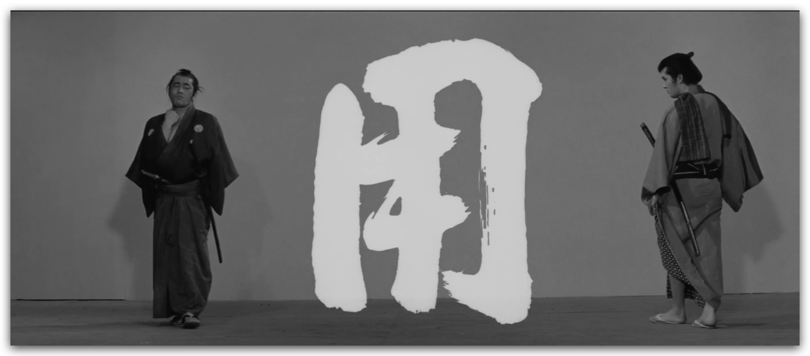
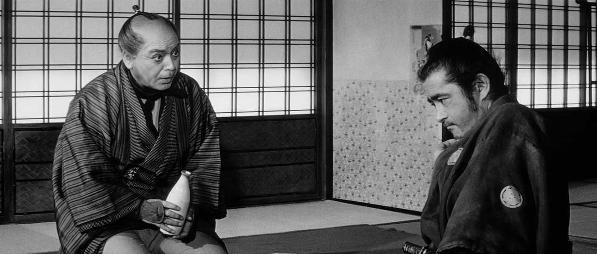
Коротко
Три принципа: имитация (не реконструкция), адекватность (крестьянин не носит шёлк), адаптация (резинки, липучки, ортопедический корсет под оби).
Одежда — визитная карточка: с первого взгляда видно сословие. Мужчины запахивают справа налево, женщины и духи — слева направо. Многослойность — норма.
Ткани: габардин, креп, толстый хлопок, бязь. Богатые — сатин, шёлк. Нижнее всегда белое.
Цвета: мужчины — тёмные и мелкие орнаменты. Приглушённые тона (индиго, серый, коричневый, оливковый). Крестьяне не носят императорские цвета.
Обязательные предметы игрока: минимум 3 мелких личных предмета-осколка (веер, нэцкэ, монета), которые не жалко отдать или потерять. На них вешаются мандаты.
Упрощения: хакама — на резинке (иначе замучаетесь в туалете), оби — готовый узел на липучке, монашеские сандалии — однотонные кеды.
Сословия по силуэту:
- Самурай — аса-камисимо, два меча, гербы господина
- Ронин — без гербов, поношенный; чем дольше без господина, тем хуже
- Аристократ — как самурай, но может один меч или без
- Крестьянин — косодэ, хаори, сандалии, платок; рабочая и нарядная одежда разделены
- Горожанин/купец — похож на самурая, но без двух мечей
- Якудза — как горожанин, татуировки по статусу
- Бандит — лохмотья, грязь, вне закона
- Монах — ряса, кэса, бритая голова, чётки; ямабуси — посох с кольцами
Совет: до игры примерьте весь костюм и двигайтесь в нём — запаситесь шнурками про запас.
Мастерская группа искренне считает, что на освоение искусства кицукэ уходят годы, поэтому в рамках игры необходимо существенно упростить подход к созданию костюма персонажа.
Подробности
1. Имитация
Мы не просим игроков заниматься исторической реконструкцией. Мы просим сделать для персонажа собирательный образ японца эпохи Бакумацу доступными вам средствами. Не заморачивайтесь за детали, без которых можно обойтись — сделайте так, чтобы одежда была визитной карточкой, по которой с первого взгляда определяется сословие и вехи жизненного пути.
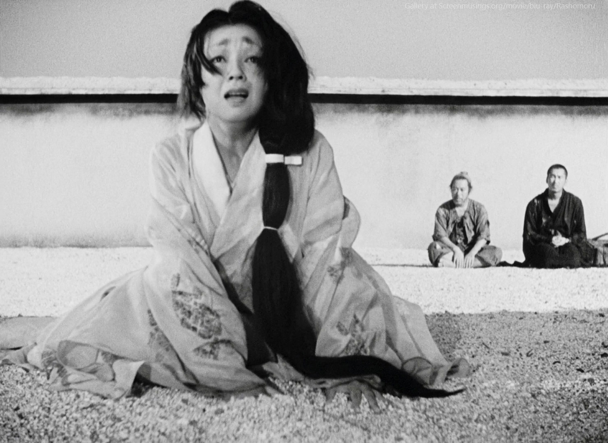
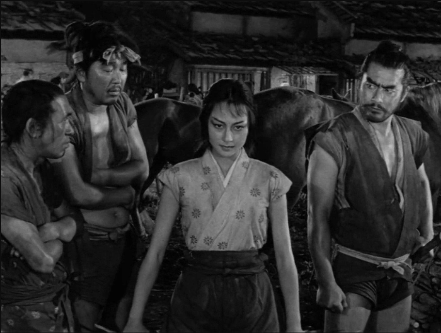
2. Адекватность
Повседневная жизнь существенно отличается от изображений на гравюрах укиё-э. Японцы — обычные люди, так же мёрзли, берегли одежду от грязи, отличали будничное от нарядного. Ярких цветов и шёлковых тканей в их жизни существенно меньше, чем принято считать. Одно свадебное (красное) кимоно в деревне может передаваться из поколения в поколение.
Крестьяне носят хлопок, утепляются подбитыми ватой стёгаными накидками, подворачивают полы кимоно за пояс и работают в поле обнажив ноги выше колен. Часто жителей одной деревни можно узнать по характерной домотканой одежде или способу завязывать пояс.
Тонкие детали:
- Даже через сильно заношенную одежду не должно просвечивать тело в интимных частях
- Если пояс женщины завязан узлом спереди, а не сзади — это представительница древнейшей профессии
- На ту же профессию намекает орнамент с пионами (бывают и «безобидные» рисунки с пионами)
- Если одежда синтоистского священника в грязи — ему нельзя исполнять в ней обряд
3. Адаптация
Практически все виды классической японской одежды кроятся из прямоугольников ткани, без кривых линий. Посадка по фигуре достигается сложной системой завязок и поясов. Чтобы в быту на игре костюм не «разваливался» — адаптируйте его современными методами:
- Не пользуйтесь мерками традиционных японских выкроек — среднему европейцу они не подходят по росту и объёмам. Примеряйте на себя. Избыток длины вещи не косяк — это запас: при завязывании поясов излишек длины убирается под пояс складкой и «держит» полы вместе.
- Ткани: габардин, креп, толстый хлопок, бязь (постельный сатин попадается иногда с традиционными рисунками, в полоску и клетку). Богатые персонажи могут носить сатин, шёлк — однотонные и с орнаментом.
- Мужчины, как правило, носят более тёмные цвета и мелкие орнаменты. Нижняя одежда и бельё у всех белые или светлые. Мужчина запахивает кимоно справа налево, женщина (и дух, и ёкай) — слева направо. Многослойность в одежде — норма.
- Смело делайте хакама на резинках вместо поясов, иначе замучаетесь ходить в туалет. Вместо традиционного завязывающегося оби берите готовый узел и пояс на липучке, под него — ортопедический корсет.
- До игры примерьте костюм так, как собираетесь носить. Испытайте прикид на разнообразных движениях. Запаситесь шнурками и верёвочками для дополнительных завязок.
- Традиционная женская причёска трудна в исполнении. МГ не настаивает на ношении симада — замените высоким пучком или низким хвостом. Украшения в волосах — предмет роскоши, используйте с оглядкой на квэнту (крупные шпильки с подвесками — атрибут дорогих проституток). У состоятельных женщин чаще черепаховые гребни с перламутром. Монахи, даже женщины, бреют голову и носят специальный капюшон.
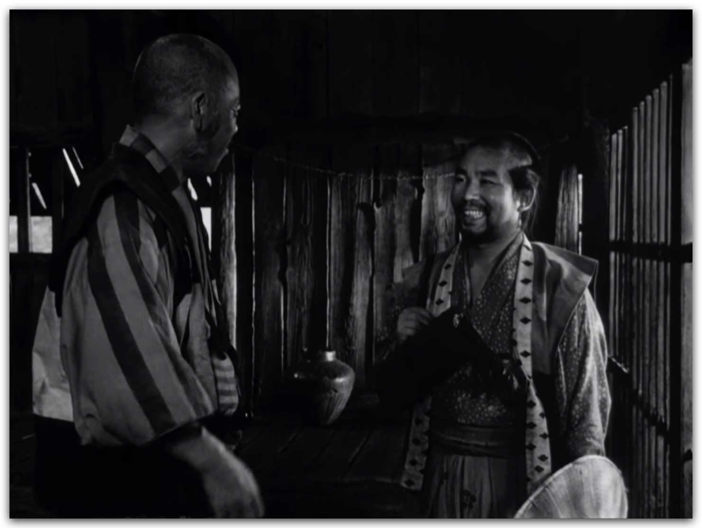
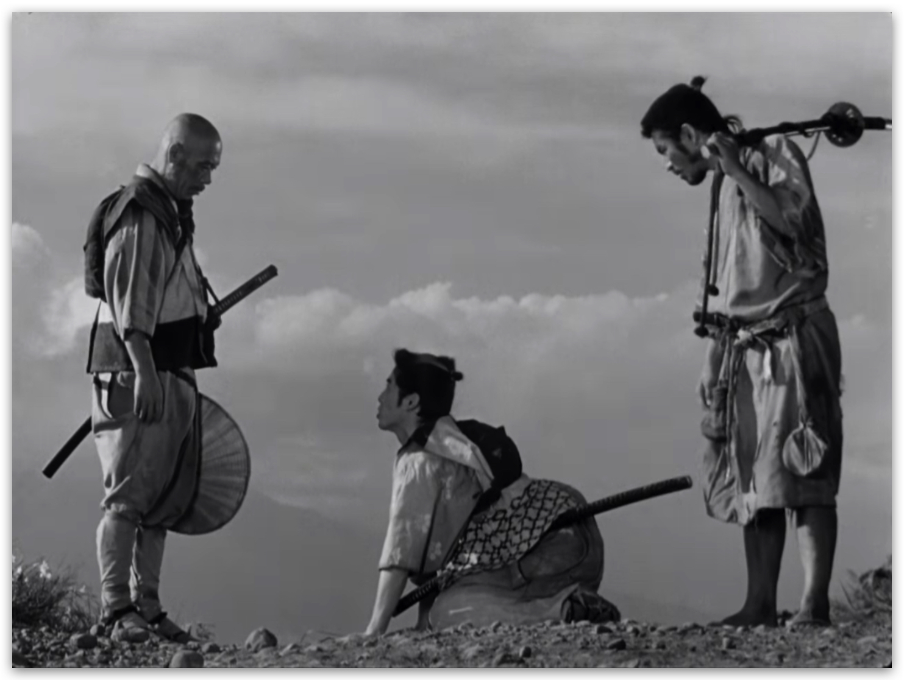
Базовые элементы одежды
Кимоно
Т-образный халат, закрепляется на теле поясом оби на талии. Вместо пуговиц — ремешки и бечёвки. Рукава содэ обычно намного шире толщины руки, имеют мешкообразную форму. Рукавное отверстие всегда меньше высоты самого рукава. Воротника нет.
Нижнее кимоно нагэдзюбан — белое, к телу из мягкой ткани. Верхние уже из обычной ткани. Может быть однотонным или с рисунком, с подкладом, расписанным или вышитым. По узору определяется сезон носки: бабочки и вишнёвый цвет — весна, водные рисунки — лето, листья клёна — осень, сосны и бамбук — зима. Узоры символичны и могут рассказывать историю персонажа.
Хаори
Накидка поверх кимоно или хакама. Прямой крой, без запаха. Рукава как у кимоно. Воротник уже, спереди нет перекрывающихся планок. Длина ниже пояса, но выше колена. Застёжка — шнурок хаори-химо. Может быть как повседневным, так и формальным.
Хакама
Широкие штаны в складку, напоминающие юбку или шаровары. Надеваются поверх кимоно. Семь глубоких складок: пять спереди и две сзади (расположение передних асимметрично — три справа и две слева).
Мужские хакама крепятся на бёдрах, женские — на талии. Снабжены четырьмя лентами (химо): две длинные спереди, две короткие сзади. Сзади — жёсткая трапециевидная часть коси-ита. В кэндо часто используется хакама цвета индиго. Существует два типа: раздельные (уманори) и нераздельные (андон бакама).
Лайфхак: всегда можно купить готовые мужские хакама в любом магазине формы для айкидо.
Катагину и аса-камисимо
Катагину — безрукавная двубортная накидка самураев эпохи Эдо, часть официального костюма аса-камисимо. Подчёркивала статус гербами, сочеталась с хакама и нижним кимоно.
Аса-камисимо — официальный костюм воина из трёх частей (косодэ + катагину + хакама). Типичная одежда самурая на службе. Катагину можно заменить на хаори или каригину с гербами. Самураи используют гербы господина. Гербы собственного рода — на флагах или в личное время. Не самураи тоже могут носить подобный костюм, но только с одним мечом, чаще с хаори.
В аса-камисимо хакама и каригину (катагину, хаори) как правило шьются из одной и той же ткани.
Таби, кэса, обувь
- Таби — носки с раздвоенным носком (большой палец отделён как в варежке). Белые для формальных церемоний, фиолетовые и золотые — аристократия, синие — простолюдины. Проститутки в городских кварталах носили кожаные таби, так как им запрещено было выходить на улицу в обуви.
- Кэса — буддийское монашеское одеяние, прямоугольная накидка с решётчатым узором. Цвета отличаются по рангам. Монах-ямабуси и монахи буддийских направлений визуально разные. Непременный атрибут ямабуси — посох с кольцами (сякудзё 180 см и конгодзуэ 120 см).
- Обувь: большинство видов японской традиционной обуви — разновидности сандалий, носить на игре не очень удобно. Если неудобно — замените однотонными белыми или тёмными кроссовками/тканевыми кедами. Традиционные гэта и дзори продаются на маркетплейсах, но будьте осторожны — деревянная обувь с негибкой подошвой часто даёт травмы.
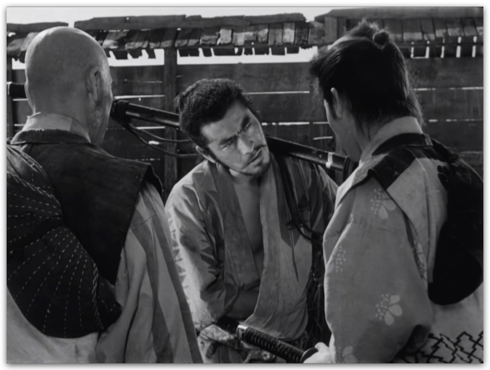
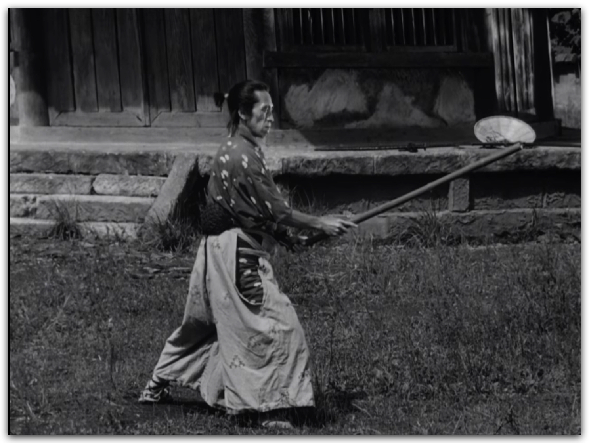
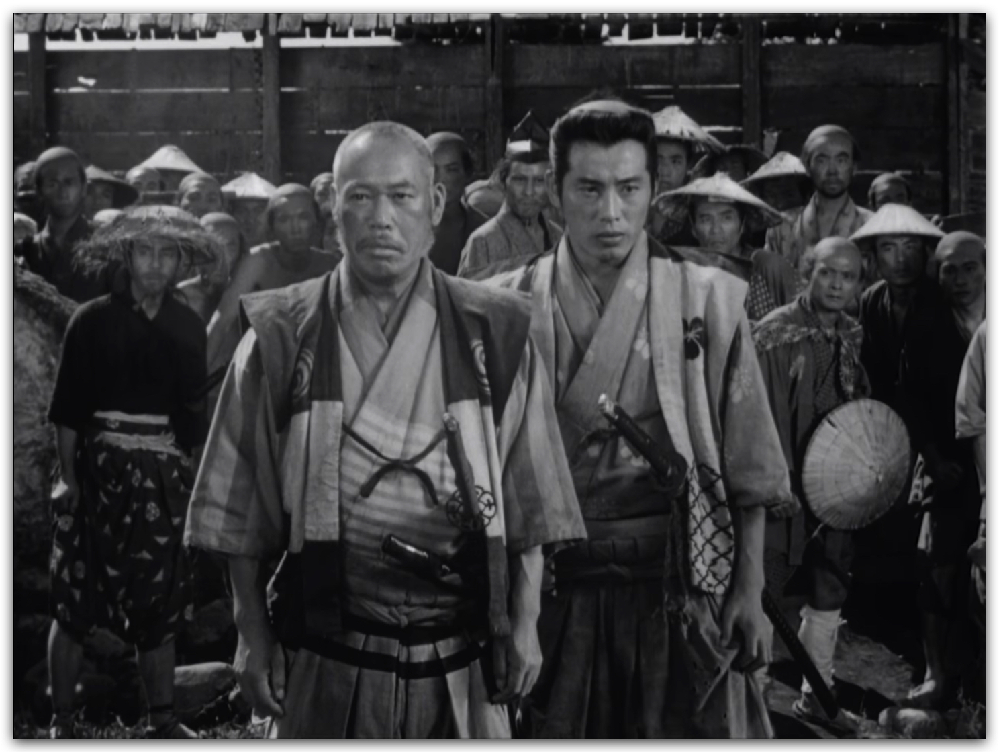
Сословия
Аристократы, самураи, ронины
В эпоху Бакумацу одежда аристократов и самураев мало чем отличается — разве что по финансовым возможностям. Придворный костюм разный, повседневный отличается тем, что только самурай имеет право носить два меча у пояса. Аристократ может носить один.
Мужчины традиционно носят аса-камисимо в цветах рода, которому служат. Аристократы подчёркивают значимость своего рода. В зависимости от достатка одежда сшита из более дорогой или дешёвой ткани. Носят два меча у пояса. Обуваются в деревянные или соломенные сандалии, носят таби. Самурай также может носить не хакама, а косодэ — повседневное кимоно с относительно короткими рукавами. Стандартно сверху — хаори.
Ронины: как правило, нет гербов на одежде. По степени поношенности можно понять, как давно ронин без господина. Иногда ронин выглядит почти как разбойник с большой дороги.
Женщины носят кимоно из материалов и с декором в зависимости от достатка. Повседневно — косодэ с поясом-оби шириной до 30 см. Незамужние для нарядной одежды носят фурисодэ — кимоно с длинными развевающимися рукавами. Свободная часть рукава обычно на 10-15 см выше щиколотки. Внутренний край рукава не зашит, сквозь него виден яркий подклад и рукава нижнего кимоно. Завязывается пояском-оби с пышным узлом на спине.
Косодэ также может быть верхней одеждой, надетой поверх уже завязанного оби на нижнем слое — тогда его носят распахнутым. Многослойная одежда считается более нарядной — красиво, когда полы верхних кимоно веером распахиваются спереди и примерно на 20-25 см подол тянется шлейфом.
Женщины самурайских родов часто обучены боевым искусствам и езде на лошади. Для них привычно носить хакама — не только формальные красные, но и более свободные удобные формы.
Рекомендуем посмотреть фильм «О-оку» 2006 года чтобы получить практически исчерпывающее представление о внешнем виде богатых и знатных женщин эпохи.
Крестьяне
Уважаемое сословие. Даже когда бедствуют, стараются одеться аккуратно. Экономят, чётко отделяют рабочую одежду от нарядной. Мужчины и женщины носят косодэ, хаори, сандалии, соломенные шляпы или платки. Для работы в поле повязывают платки на голову, иногда надевают рабочие хакама. Косодэ для работы может быть коротким, даже выше колена. Ткани одной местности узнаются по орнаменту или цвету, жители одной деревни носят одежду похожим способом. Достаток семьи виден по степени изношенности.
Горожане
Что-то среднее между крестьянами и самураями. Предельно практично. Богатых горожан и купцов можно перепутать с самураями, но носить два меча запрещено. Чаще носят косодэ, чем хакама. Женщины носят косодэ и оби. И мужчины, и женщины носят хаори. Бедный горожанин выглядит как нищий крестьянин, даже ещё хуже.
Бандиты и якудза
Бандиты одеты в лохмотья того, в чём пришлось стать бандитом, и во что удалось добыть. Лохматые, грязные, вне закона.
Якудза выглядит как горожанин. Носят татуировки, размер которых зависит от статуса внутри банды. Тайно или открыто — вопрос бэкграунда персонажа, но как правило татуировки не показывают просто так. А у борзой шпаны их ещё нет по статусу.
Монахи
Носят рясы и кэса в оттенках серого, чёрные, белые. Сбривают волосы с головы. Статус монаха в монастыре определяется по одежде. Если монахом становится знатный или богатый человек, или отречение — формальность, то одежда будет очень дорогой шёлковой версией одеяния.
Комусо — монахи дзэнской школы Фукэ, «монахи пустоты». Практиковали суйдзэн — медитативную игру на сякухати (длинной бамбуковой флейте).
- Тэнгай — тростниковая шляпа, полностью скрывавшая лицо (с прорезями для глаз); символизировала отрешённость и обеспечивала анонимность
- Кэса — прямоугольная накидка с решётчатым узором (цвет зависел от ранга)
- Два меча: короткий («малая сякухати») у пояса и длинный деревянный
- Кэнконбари — деревянная дощечка на груди с надписью «не рождённый, не умирающий» и дзэнским именем монаха
- Фукусу — одеяло за спиной
- «Котомки трёх долин» — чаша для подаяния и две коробочки (для гимнов и молитвенных табличек)
Ямабуси (они же кэндзя, сюгэндзя, хидзири) — монахи-воины. Непременный атрибут — посох с шестью кольцами у навершия, чей звон отпугивает живых существ с пути, чтобы монах случайно не нарушил ахимсу.
Буддийские чётки (дзюдзу / нэндзю):
- Чаще всего 108 бусин — каноническое число, символизирует 108 мирских желаний (бонно)
- Сокращённые версии: 27, 54 или 18 бусин
- Материал: чёрное дерево, сандал, кипарис, бамбук. Для старших — кость, агат, нефрит, горный хрусталь. Семена бодхи — символически значимые
- Нанизаны на шёлковую нить (жёлтую или красную), на концах — кисточка или узлы
- Госю — пять цветных нитей (синий, жёлтый, красный, белый, чёрный) вплетены в кисточку: символизируют пять элементов и пять мудростей
- Сюцудзу — миниатюрная версия чёток (18 бусин), на запястье
Служители синто
Жрица Мико носит традиционное одеяние из белого косодэ и красных хакама. В торжественных случаях — белая накидка учики с незашитыми боковыми швами и украшениями. Мико как правило совсем молоденькие, в их обязанности входит обслуживание храма.
Каннуси носят традиционный костюм дзёсай и шапку-эбоси для церемоний. В повседневной жизни каннуси и мико одеваются в соответствии со своим сословием.
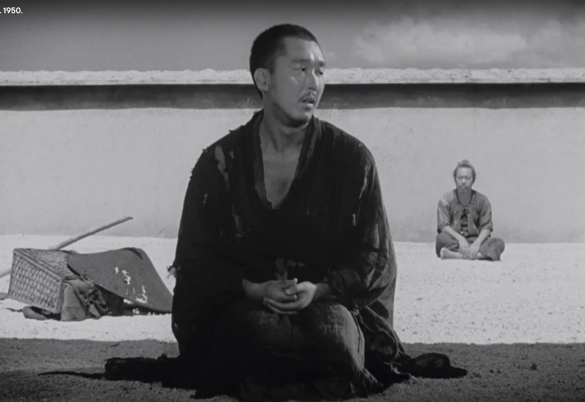
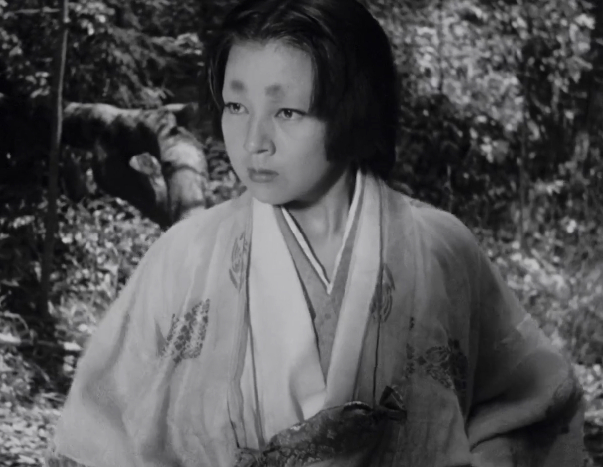
Игровые предметы и «Осколки» (ВАЖНО)
- Осколки души: каждому игроку нужно иметь при себе минимум 3 мелких личных предмета. Веера, нэцкэ, памятные безделушки, монеты. Вам должно быть не жалко их потерять или отдать другому.
- Мандаты: именно на эти предметы будут вешаться игровые мандаты. Вещи должны быть частью вашего облика, а не лежать на дне сумки.
Маркеры и атрибуты
- 2 меча за поясом — самурай или ронин
- 1 меч — скорее чей-то охранник; или аристократ
- Хакама — самурай, ронин, женщина самурайского рода
- Гербы (мон) на хаори/катагину — действующий самурай; у ронина их нет или замазаны
- Ног не видно (прикрыта полами одежды), кимоно на запах слева направо — призрак / дух / нежить
- Пояс узлом спереди у женщины — представительница древнейшей профессии
- Орнамент с пионами на женском кимоно — намёк на ту же профессию
- Чётки, бритая голова, кэса — буддийский монах
- Посох с кольцами — ямабуси
- Тэнгай (тростниковая шляпа, скрывающая лицо) — комусо
- Белое косодэ + красные хакама — жрица мико
- Шапка-эбоси — синтоистский жрец каннуси на церемонии
- Татуировки — якудза (размер по статусу в банде)
- Лохмотья, грязь, отсутствие гербов — бандит или нищий
Полезные ссылки
Выкройки и уроки по шитью, рекомендуем всем:
ru-jp.org/hovanchuk-jp-odezhda-01.htm
Ольга Александровна Хованчук — кандидат исторических наук, востоковед, специалист по истории японского костюма.
wlad-1978.livejournal.com/331619.html